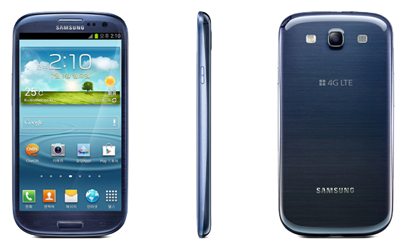

삼성 갤럭시 S3
1. 외관

삼성전자가 2012년 5월과 8월, IFA 2012에서 각각 공개한 안드로이드 스마트폰.
2. 사양
| 프로세서 | 삼성 엑시노스 4412 SoC. ARM Cortex-A9 MP4 1.4 GHz CPU, ARM Mali-400 MP4 440 → 533 MHz GPU | ||
| 메모리 | 1 GB LPDDR2 SDRAM, 16 / 32 GB 내장 메모리, micro SDXC 및 exFAT (최대 64 GB 지원) | ||
| 디스플레이 |
4.8인치 HD(1280 x 720) RG-BG 펜타일 서브픽셀 방식의 삼성D HD Super AMOLED (306 ppi) 멀티터치 지원 정전식 터치 스크린 |
||
| 네트워크 | 기본 | HSPA+ 42Mbps HSDPA & HSUPA & UMTS |
GSM & EDGE Wi-Fi 802.11a/b/g/n, 블루투스 4.0+LE |
| CM | TD-SCDMA | ||
| 카메라 | 전면 190만 화소, 후면 800만 화소 AF 및 LED 플래시 | ||
| 배터리 | Li-lon 2100 mAh | ||
| 운영체제 | 안드로이드 4.0 (Icecream Sandwich) → 4.1 → 4.3 (Jelly Bean) | ||
| 규격 | 70.6 x 136.6 x 8.6 mm, 133 g | ||
3. 상세
2010년 갤럭시 S를 시작으로, 매해 상반기에 공개된 삼성전자의 안드로이드 플래그쉽 스마트폰 시리즈인 갤럭시 S 시리즈의 2012년도형 모델이자 세 번째 모델이다. 기존 갤럭시 S 시리즈와는 확연히 다른, 호불호가 극명하게 갈리는 디자인으로 공개되어 논란이 있었다.
국내외를 막론하고 둥글둥글한 디자인에 대한 지적이 끊이질 않았다.
심지어 삼성전자의 과거의 주력 제품 라인업이자 흑역사를 떠오르게 하는 디자인이라는 평도 있었다.
사양 자체는 우수한 편이다. WCDMA 모델과 표준 LTE 모델 모두 삼성 엑시노스 4412를 사용한다.
ARM Cortex-A9 쿼드코어 CPU를 사용하며 클럭은 1.4 GHz로 작동한다. GPU의 경우, 갤럭시 S II의 ARM Mali-400 쿼드코어를 그대로 사용하나,
공정 상의 문제로 다운클럭되어 있던 것이 원래의 권장클럭으로 복구되었다. 다만, WCDMA 모델이 먼저 공개된 시기에 북미와 일본에 빠르게 공급해야 했기에
표준 LTE 모델이 아닌 퀄컴 스냅드래곤 S4 Plus MSM8960을 사용한 LTE 내수용 모델이 들어갔다. Qualcomm Krait 듀얼코어 CPU를 사용하며 클럭은 1.5 GHz로 작동한다.